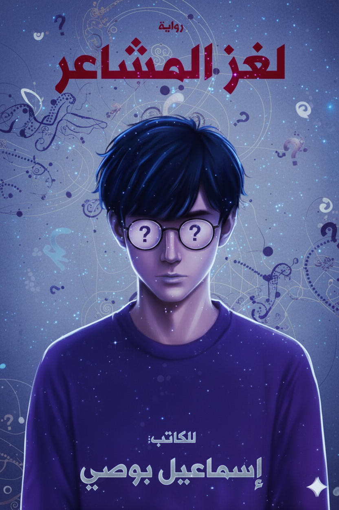

لغز المشاعر
تدور الأحداث حول شاب يعيش صراعًا داخليًا بين عقله الذي يسعى للانضباط والتركيز، ومشاعره التي تبدأ بالتشكل دون استئذان. من خلال تفاصيل يومية تبدو عادية—الدراسة، الصداقات، اللقاءات العابرة—يتحول كل موقف بسيط إلى اختبار نفسي يكشف طبقات خفية من الشخصية. تظهر في حياته شخصيات مختلفة، كل واحدة تمثل جانبًا معينًا من هذا الصراع: الانجذاب، الغموض، الفضول، والتعلق. ومع كل تفاعل، يزداد تعقيد الصورة، ويصبح من الصعب التمييز بين ما هو حقيقي وما هو مجرد انعكاس داخلي. الرواية لا تعطي إجابات جاهزة، بل تضع القارئ داخل التجربة نفسها، حيث يُطلب منه أن يلاحظ، لا أن يحكم. وكلما تقدم في القراءة، يبدأ تدريجيًا بفهم أن ما يبدو بسيطًا في البداية، يخفي خلفه شبكة من المعاني والتفاصيل التي لا تُكشف دفعة واحدة